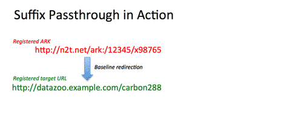

Suffix Passthrough (SPT) is a feature that lets you add any suffix to an identifier, and when a user selects ("clicks on") the identifier, the suffix is added to the end of the identifier's location (target) URL. It dramatically reduces the maintenance burden by permitting one identifier to stand in for many identifiers.
The transformation of an identifier into its final location URL is done by a web server called a resolver, and the transformation is called resolution. Typically a web browser uses the resolver to find the final location URL, which it then displays in its location bar. Currently SPT works only for ARK identifiers and only with the Name-to-Thing (N2T) resolver.
Basically, Suffix Passthrough makes every ARK the root of its own "namespace". Any user-added suffix, which is a common way to form sub-object identifiers, will be passed through to the registered target object. For example, a dataset with 10,000 component parts and just this one "ancestor" ARK,